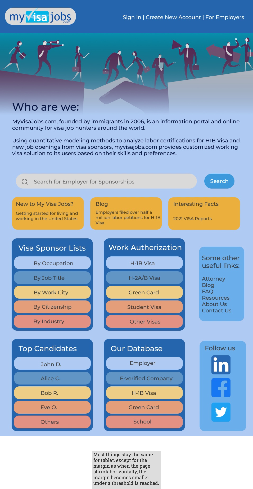

Original Website
Usability Problems
Tests & Findings
Visual Style Guide
Lo-fi Prototypes
Hi-fi Prototypes
Responsive Page
Responsive Redesign
Original Website: https://www.myvisajobs.com/
I choose this website because it only has basic designs, and the whole website is filled with blue and underlined links.
Usability Problems
Usability
The navigation is small and has no background color, making it harder for a user to notice.
The bottom of the page seems to be in the same category as the top of the page, but they are separated, which could make it harder for a user to navigate the function.
The primary purpose of this website is to help job seekers determine whether a company is willing to sponsor a working visa or not. However, the search bar is too small, which makes users hard to notice it.
The whole page is filled with small details of every functionality it provides. However, most users are just looking for one, and such distracting information could make users hard to find what they want.
The “Blog” section is hard to notice since the only indicator is the word “Blog” before the title.
Learnability
A first-time user could be distracted by the information all over the page. Since each section has a short title and ample retail space, it is hard for first-time users to navigate where they want.
They might not notice that there is a navigation bar on top. They must move around the top search box and bottom listing if they want to look for certain employers. This is a considerable distance for a similar purpose.
If they want to follow the process on the site, they have to navigate to the rightmost part of the page and look down to see the “Get Started” section. This section should be at the beginning, where users first land their eyes on.
This is not a website that most people are familiar with. It needs more information, such as an introduction to the functionalities.
Memorability
For old users, even when they know the link they want to click, they can still miss clicking on something else since many connections stick together.
With multiple places containing similar information, users who are constantly visiting the page might never click on it even though it has the functionalities that the user wants. Sometimes the user might forget the link that the user clicked last time.
It is hard for users to memorize the functionalities of each section since every section looks almost the same. The only distinguisher is the small headers.
WAVE Test Findings
One of the images has no alternative text. I agree. However, the image serves no purpose, so I think it should be entirely removed.
The contrasting problem in the search area is a problem because it makes the search area stand out less, which makes it harder for users to notice it.
WAVE detected a lot of redundant links. I agree with WAVE on this since there are too many links on the website, and some links are very unlikely to be clicked. In addition, many links point to the same link.
The most appeared alerts are not a proper use of layout table alerts. The website used tables to lay out each section and content. I agree that the website should avoid doing so because it makes every section similar, but some sections have more importance than others.
Visual Design Guide
3 Low-fidelity Wireframing
For Desktop View
For Tablet View
For Phone View
3 Hi-fidelity Wireframing
For Desktop View
For Tablet View

For Phone View
I choose flex box as my main component for putting items. The reason is that most of my designs are rectangular buttons grouped together. The best way to placed them is to use flex box to hold them. They will shrink or strench size as the page size changes. In addition, it also helps aligning items from horizontal to vertical as turing from bigger screen to smaller screen.
I only change font size when turning into phone screen size since the all of my items are relatively big. Therefore changing the font size won't affect the visual a lot.
As the screen becomes smaller, some lists are collapsed to save space. In this case, users simply can click to expand the bar.
Responsive Redesigned Page
Here is the link to the redesigned page.
Click Me Navigate to the Page
Reference
Some color combos: https://www.colorcombos.com/color-schemes/296/ColorCombo296.html